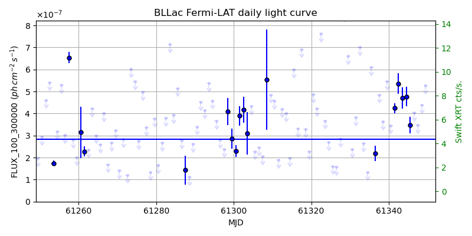
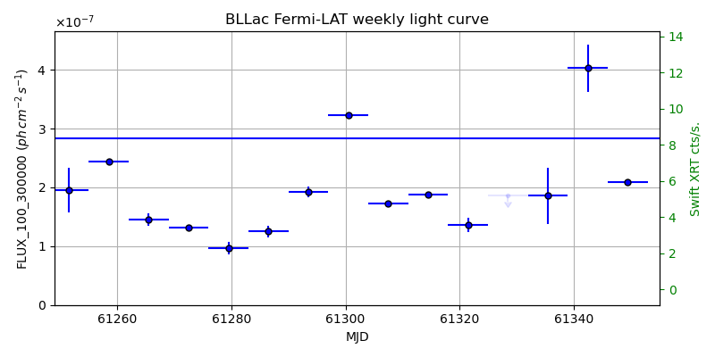
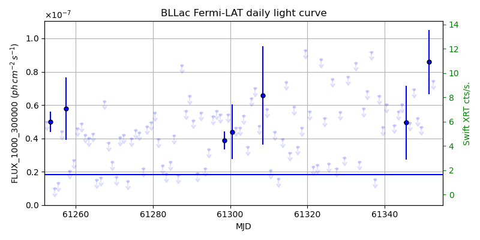
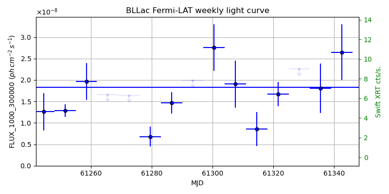

LAT Lightcurve site: https://fermi.gsfc.nasa.gov/ssc/data/access/lat/msl_lc/source/BL_Lac
Swift site: https://www.swift.psu.edu/monitoring/source.php?source=BLLacertae
NED: Query
Time of last update of this page: UT: 2026-11-06 16:28 (MJD: 61350.686)
| Property | Value |
|---|---|
| R.A. | 22:02:43.20 |
| Dec. | 42:16:40.8 |
| z | 0.067 |
| 3FGL SpectrumType | LogParabola |
| 3FGL PL Index | |
| 3FGL Flux_100_300000 | 2.84e-07 1 / (s cm2) |
| 3FGL Flux_1000_300000 | 1.83e-08 1 / (s cm2) |
| 3FGL Flux >200 GeV | 1.47e-11 1 / (s cm2) |
| 3FGL Extrap. Crab >200 GeV | 0.06 |
| 3FGL Flux After EBL Absorption >200GeV | 1.16e-11 1 / (s cm2) |
| 3FGL EBL Crab Fraction >200GeV | 0.05 |

| MJD | dMJD | Flux | dFlux | Frac3FGL | FracCrab>200GeV | EBLFracCrab>200GeV |
|---|---|---|---|---|---|---|
| 61345.50 | 0.50 | 3.46e-07 | 3.74e-08 | 1.22 | 0.08 | 0.06 |
| 61346.50 | 0.50 | 4.03e-07 | 0.00e+00 | 0.00 | 0.00 | 0.00 |
| 61347.50 | 0.50 | 3.47e-07 | 0.00e+00 | 0.00 | 0.00 | 0.00 |
| 61348.50 | 0.50 | 4.37e-07 | 0.00e+00 | 0.00 | 0.00 | 0.00 |
| 61349.50 | 0.50 | 5.26e-07 | 0.00e+00 | 0.00 | 0.00 | 0.00 |

| MJD | dMJD | Flux | dFlux | Frac3FGL | FracCrab>200GeV | EBLFracCrab>200GeV |
|---|---|---|---|---|---|---|
| 61314.50 | 3.50 | 1.88e-07 | 2.86e-09 | 0.66 | 0.04 | 0.03 |
| 61321.50 | 3.50 | 1.36e-07 | 1.24e-08 | 0.48 | 0.03 | 0.02 |
| 61328.50 | 3.50 | 1.87e-07 | 0.00e+00 | 0.00 | 0.00 | 0.00 |
| 61335.50 | 3.50 | 1.86e-07 | 4.80e-08 | 0.66 | 0.04 | 0.03 |
| 61342.50 | 3.50 | 4.03e-07 | 3.99e-08 | 1.42 | 0.09 | 0.07 |

| MJD | dMJD | Flux | dFlux | Frac3FGL | FracCrab>200GeV | EBLFracCrab>200GeV |
|---|---|---|---|---|---|---|
| 61345.50 | 0.50 | 4.94e-08 | 2.21e-08 | 2.71 | 0.17 | 0.13 |
| 61346.50 | 0.50 | 4.93e-08 | 0.00e+00 | 0.00 | 0.00 | 0.00 |
| 61347.50 | 0.50 | 6.94e-08 | 0.00e+00 | 0.00 | 0.00 | 0.00 |
| 61348.50 | 0.50 | 5.22e-08 | 0.00e+00 | 0.00 | 0.00 | 0.00 |
| 61349.50 | 0.50 | 4.68e-08 | 0.00e+00 | 0.00 | 0.00 | 0.00 |

| MJD | dMJD | Flux | dFlux | Frac3FGL | FracCrab>200GeV | EBLFracCrab>200GeV |
|---|---|---|---|---|---|---|
| 61314.50 | 3.50 | 8.56e-09 | 3.99e-09 | 0.47 | 0.03 | 0.02 |
| 61321.50 | 3.50 | 1.67e-08 | 2.83e-09 | 0.92 | 0.06 | 0.05 |
| 61328.50 | 3.50 | 2.26e-08 | 0.00e+00 | 0.00 | 0.00 | 0.00 |
| 61335.50 | 3.50 | 1.81e-08 | 5.79e-09 | 0.99 | 0.06 | 0.05 |
| 61342.50 | 3.50 | 2.65e-08 | 6.51e-09 | 1.45 | 0.09 | 0.07 |
--------------------------------------------------------- Using user-supplied coords: 22:02:43.20 42:16:40.8 2000 --------------------------------------------------------- FLWO UT night of: 2026-11-07 Local Sid. @ Midnight: 02:42 Sunset (-15.0) (local, UT): 18:39 01:39 Sunrise (-15.0) (local, UT): 05:36 12:36 Moonrise (local, UT): 05:16 12:16 Moonset (local, UT): Moon phase: 0.04 --------------------------------------------------------- AzTime LSID UT Obj_el Obj_az Mn_el Mn_az Sep. --------------------------------------------------------- 18:39 21:20 01:39 76.2 35.8 -35.5 278.9 130.7 19:09 21:50 02:09 78.9 13.1 -41.6 283.5 130.6 19:39 22:20 02:39 78.8 344.1 -47.5 288.8 130.4 20:09 22:50 03:09 75.8 322.5 -53.3 295.3 130.3 20:39 23:20 03:39 71.4 310.6 -58.7 303.4 130.1 21:09 23:50 04:09 66.3 304.5 -63.5 313.9 130.0 21:39 00:20 04:39 60.9 301.4 -67.5 328.0 129.8 22:09 00:50 05:09 55.4 300.1 -70.0 346.2 129.7 22:39 01:20 05:39 49.8 299.8 -70.5 6.9 129.5 23:09 01:51 06:09 44.3 300.3 -68.8 26.6 129.4 23:39 02:21 06:39 38.8 301.4 -65.4 42.5 129.2 00:09 02:51 07:09 33.4 302.9 -60.9 54.4 129.1 00:39 03:21 07:39 28.1 304.7 -55.8 63.5 128.9 01:09 03:51 08:09 22.9 306.9 -50.2 70.6 128.8 01:39 04:21 08:39 17.9 309.4 -44.4 76.4 128.6 02:09 04:51 09:09 13.0 312.2 -38.4 81.4 128.5 02:39 05:21 09:39 8.4 315.3 -32.4 85.8 128.4 03:09 05:51 10:09 4.2 318.7 -26.3 89.9 128.3 03:39 06:21 10:39 0.4 322.5 -20.2 93.7 128.2 04:09 06:51 11:09 -2.4 326.6 -14.2 97.5 128.1 04:39 07:21 11:39 -7.1 331.1 -8.1 101.2 128.0 05:09 07:52 12:09 -10.0 335.9 -1.2 105.0 127.9 05:36 08:19 12:36 -12.1 340.6 3.4 108.6 127.8 --------------------------------------------------------- Dark hours >55 deg.: 3.53 srcstart (UT): 2026-11-07 01:38 srcend (UT): 2026-11-07 05:11